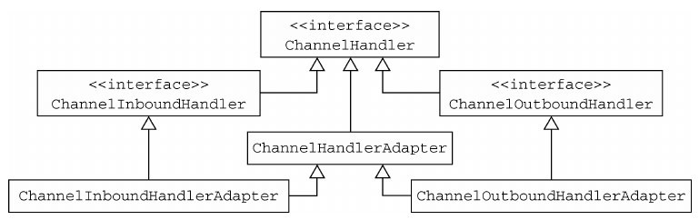
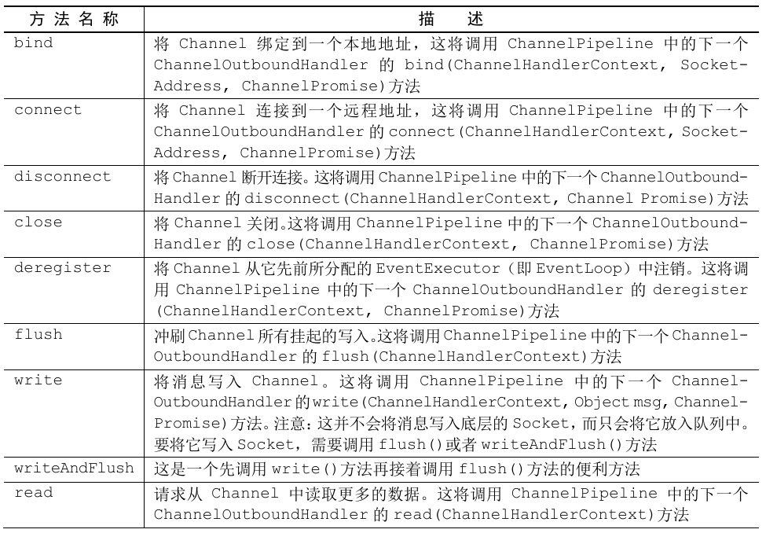

1. 第6章 ChannelHandler 和 ChannelPipeline
可以在 ChannelPipeline 中将 ChannelHandler 链接在一起以组织处理逻辑。
一个重要的关系 -- ChannelHandlerContext。
1.1. ChannelHandler 家族
1.1.1. Channel 的生命周期
Channel 接口定义了一组和 ChannelInboundHandler API 密切相关的简单但功能强大的状态模型。
Channel 的生命周期状态
当 Channel 的生命周期状态发生改变时, 将会生成对应的事件。这些事件将会被转发给 ChannelPipeline 中的 ChannelHandler, 其可以随后对它们做出响应。
Channel 的状态模型

1.1.2. ChannelHandler 的生命周期
在 ChannelHandler 被添加到 ChannelPipeline 中或者从 ChannelPipeline 中移除时会调用对应的生命周期操作。
ChannelHandler 的每一个生命周期操作方法都接受一个 ChannelHandlerContext 参数。
ChannelHandler 的生命周期方法
- Netty 定义了两个重要的 ChannelHandler 子接口
- ChannelInboundHandler：处理入站数据以及各种状态变化;
- ChannelOutboundHandler：处理出站数据并且允许拦截所有的操作。
1.1.3. ChannelInboundHandler 接口
ChannelInboundHandler 的生命周期方法将会在数据被接收时或者与其对应的 Channel 状态发生改变时被调用。
ChannelInboundHandler 的生命周期方法
- 当某个 ChannelInboundHandler 的实现重写 channelRead() 方法时, 它将负责显式地释放与池化的 ByteBuf 实例相关的内存。
- Netty 为此提供了一个实用方法 ReferenceCountUtil.release()。
- 示例参考
Netty 将使用 WARN 级别的日志消息记录未释放的资源, 使得可以非常简单地在代码中发现违规的实例。以这种方式管理资源很繁琐。
- 一个更加简单的方式是使用 SimpleChannelInboundHandler。
- 示例参考
由于 SimpleChannelInboundHandler 会自动释放资源, 所以不应该存储指向任何消息的引用供将来使用, 因为这些引用都将会失效。
1.1.4. ChannelOutboundHandler 接口
出站操作和数据将由 ChannelOutboundHandler 处理。它的方法将被 Channel、 ChannelPipeline 以及 ChannelHandlerContext 调用。
ChannelOutboundHandler 的一个强大的功能是可以按需推迟操作或者事件, 这使得可以通过一些复杂的方法来处理请求。
ChannelOutboundHandler 本身定义的方法，忽略那些从 ChannelHandler 继承的方法。
- ChannelPromise 与 ChannelFuture
- ChannelOutboundHandler 中的大部分方法都需要一个 ChannelPromise 参数, 以便在操作完成时得到通知。
- ChannelPromise 是 ChannelFuture 的一个子类, 其定义了一些可写的方法, 如 setSuccess() 和 setFailure(), 从而使 ChannelFuture 不可变。
1.1.5. ChannelHandler 适配器
可以使用 ChannelInboundHandlerAdapter 和 ChannelOutboundHandlerAdapter 类作为自己的 ChannelHandler 的起始点。
- 这两个适配器分别提供了 ChannelInboundHandler 和 ChannelOutboundHandler 的基本实现。
- 通过扩展抽象类 ChannelHandlerAdapter, 它们获得了它们共同的超接口 ChannelHandler 的方法。
ChannelHandlerAdapter 类的层次结构

ChannelHandlerAdapter 提供了实用方法 isSharable()。如果其对应的实现被标注为 Sharable, 那么这个方法将返回 true, 表示它可以被添加到多个 ChannelPipeline 中。
在 ChannelInboundHandlerAdapter 和 ChannelOutboundHandlerAdapter 中所提供的方法体调用了其相关联的 ChannelHandlerContext 上的等效方法, 从而将事件转发到了 ChannelPipeline 中的下一个 ChannelHandler 中。
在自己的 ChannelHandler 中使用这些适配器类, 只需要简单地扩展它们, 并且重写那些想要自定义的方法。
1.1.6. 资源管理
每当通过调用 ChannelInboundHandler.channelRead() 或者 ChannelOutboundHandler.write() 方法来处理数据时, 开发者都需要确保没有任何的资源泄漏。
Netty 使用引用计数来处理池化的 ByteBuf。所以在完全使用完某个ByteBuf 后, 调整其引用计数是很重要的。
为了诊断潜在的资源泄漏问题, Netty 提供了 ResourceLeakDetector 类, 它将对应用程序的缓冲区分配做大约 1% 的采样来检测内存泄露。相关的开销是非常小的。
Netty 目前定义了 4 种泄漏检测级别
泄露检测级别可以通过将 Java 系统属性设置为表中的一个值来定义
java -Dio.netty.leakDetectionLevel=ADVANCED
如果带着该 JVM 选项重新启动应用程序, 可以看到应用程序最近被泄漏的缓冲区被访问的位置。
在 channelRead() 操作中直接消费入站消息
- 它不会通过调用 ChannelHandlerContext.fireChannelRead() 方法将入站消息转发给下一个 ChannelInboundHandler。
- 示例参考
消费入站消息的简单方式
- 由于消费入站数据是一项常规任务, 所以 Netty 提供了一个特殊的被称为 SimpleChannelInboundHandler 的 ChannelInboundHandler 实现。
- 这个实现会在消息被 channelRead0() 方法消费之后自动释放消息。
在出站方向这边, 如果处理了 write() 操作并丢弃了一个消息, 那么也应该负责释放它。
一个丢弃所有的写入数据的实现
重要的是, 不仅要释放资源, 还要通知 ChannelPromise。否则可能会出现 ChannelFutureListener 收不到某个消息已经被处理了的通知的情况。
总结
- 如果一个消息被消费或者丢弃了, 并且没有传递给 ChannelPipeline 中的下一个 ChannelOutboundHandler, 那么用户就有责任调用 ReferenceCountUtil.release()。
- 如果消息到达了实际的传输层, 那么当它被写入时或者 Channel 关闭时, 都将被自动释放。
1.2. ChannelPipeline 接口
ChannelPipeline 是一个拦截流经 Channel 的入站和出站事件的 ChannelHandler 实例链。
每一个新创建的 Channel 都将会被分配一个新的 ChannelPipeline。
这项关联是永久性的。即 Channel 既不能附加另外一个 ChannelPipeline, 也不能分离其当前的。
在 Netty 组件的生命周期中, 这是一项固定的操作, 不需要开发人员的任何干预。
根据事件的起源, 事件将会被 ChannelInboundHandler 或者 ChannelOutboundHandler 处理。
随后, 通过调用 ChannelHandlerContext 实现, 它将被转发给同一超类型的下一个 ChannelHandler。
ChannelHandlerContext
- ChannelHandlerContext 使得 ChannelHandler 能够和它的 ChannelPipeline 以及其他的 ChannelHandler 交互。
- ChannelHandler 可以通知其所属的 ChannelPipeline 中的下一个 ChannelHandler, 甚至可以动态修改它所属的 ChannelPipeline。
- ChannelHandlerContext 具有丰富的用于处理事件和执行 I/O 操作的 API。
ChannelPipeline 和它的 ChannelHandler
- ChannelPipeline 主要由一系列的 ChannelHandler 组成。
- ChannelPipeline 还提供了通过 ChannelPipeline 本身传播事件的方法。
- 如果一个入站事件被触发, 它将被从 ChannelPipeline 的头部开始一直被传播到 Channel Pipeline 的尾端。
- 一个出站 I/O 事件将从 ChannelPipeline 的最右边开始, 然后向左传播。
ChannelPipeline 相对论
- Netty 总是将 ChannelPipeline 的入站口作为头部(上图的左侧), 而将出站口作为尾端(上图的右侧)。
- 通过调用 ChannelPipeline.add*() 方法将入站处理器(ChannelInboundHandler)和出站处理器(ChannelOutboundHandler)混合添加到 ChannelPipeline 之后, 每一个 ChannelHandler 从头部到尾端的顺序位置如上图。因此,
- 如果将上图中的处理器(ChannelHandler)从左到右进行编号, 那么第一个被入站事件看到的 ChannelHandler 将是 1, 而第一个被出站事件看到的 ChannelHandler 将是 5。
在 ChannelPipeline 传播事件时, 它会测试 ChannelPipeline 中的下一个 ChannelHandler 的类型是否和事件的运动方向相匹配。
- 如果不匹配, ChannelPipeline 将跳过该 ChannelHandler 并前进到下一个, 直到它找到和该事件所期望的方向相匹配的为止。
- 当然, ChannelHandler 也可以同时实现 ChannelInboundHandler 接口和 ChannelOutboundHandler 接口。
1.2.1. 修改 ChannelPipeline
ChannelHandler 可以通过添加、删除或者替换其他的 ChannelHandler 来实时地修改ChannelPipeline 的布局。ChannelHandler 也可以将它自己从 ChannelPipeline 中移除。
ChannelHandler 的用于修改 ChannelPipeline 的方法
可以基于重组 ChannelHandler 功能来轻松地实现极其灵活的逻辑。
ChannelHandler 的执行和阻塞
- 通常 ChannelPipeline 中的每一个 ChannelHandler 都是通过它的 EventLoop(I/O 线程) 来处理传递给它的事件的。所以至关重要的是不要阻塞这个线程, 因为这会对整体的 I/O 处理产生负面的影响。
- 有时可能需要与那些使用阻塞 API 的遗留代码进行交互。
- 对于这种情况, ChannelPipeline 有一些接受一个 EventExecutorGroup 的 add() 方法。
- 如果一个事件被传递给一个自定义的 EventExecutorGroup, 它将被包含在这个 EventExecutorGroup 中的某个 EventExecutor 所处理, 从而被从该 Channel 本身的 EventLoop 中移除。
- 对于这种用例, Netty 提供了一个叫 DefaultEventExecutorGroup 的默认实现。
ChannelPipeline 的用于访问 ChannelHandler 的操作
1.2.2. 触发事件
ChannelPipeline 的 API 公开了用于调用入站和出站操作的附加方法。
入站操作, 用于通知 ChannelInboundHandler 在 ChannelPipeline 中所发生的事件。
在出站这边, 处理事件将会导致底层的套接字上发生一系列的动作。
ChannelPipeline API 的出站操作。

- 总结
- ChannelPipeline 保存了与 Channel 相关联的 ChannelHandler;
- ChannelPipeline 可以根据需要, 通过添加或者删除 ChannelHandler 来动态地修改;
- ChannelPipeline 有着丰富的 API 用以被调用, 以响应入站和出站事件。
1.3. ChannelHandlerContext 接口
- 6.3 ...